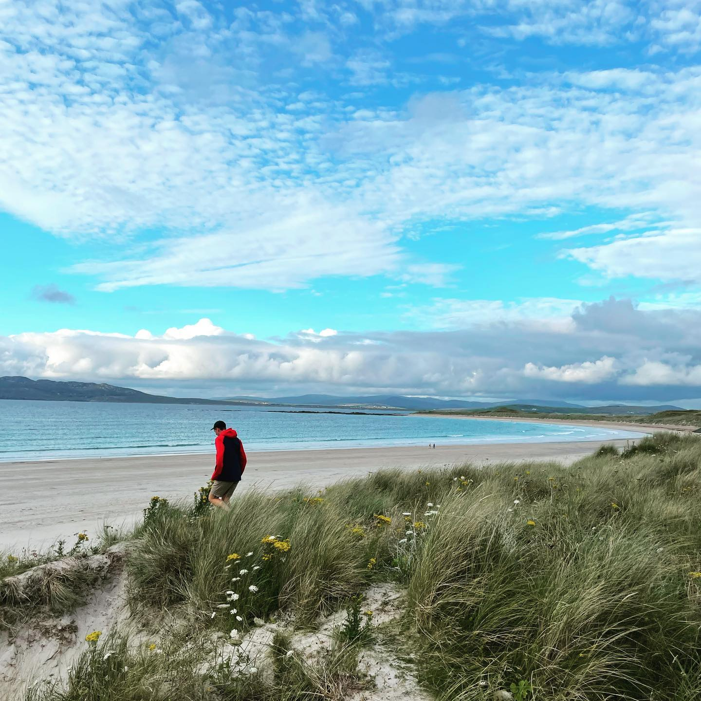
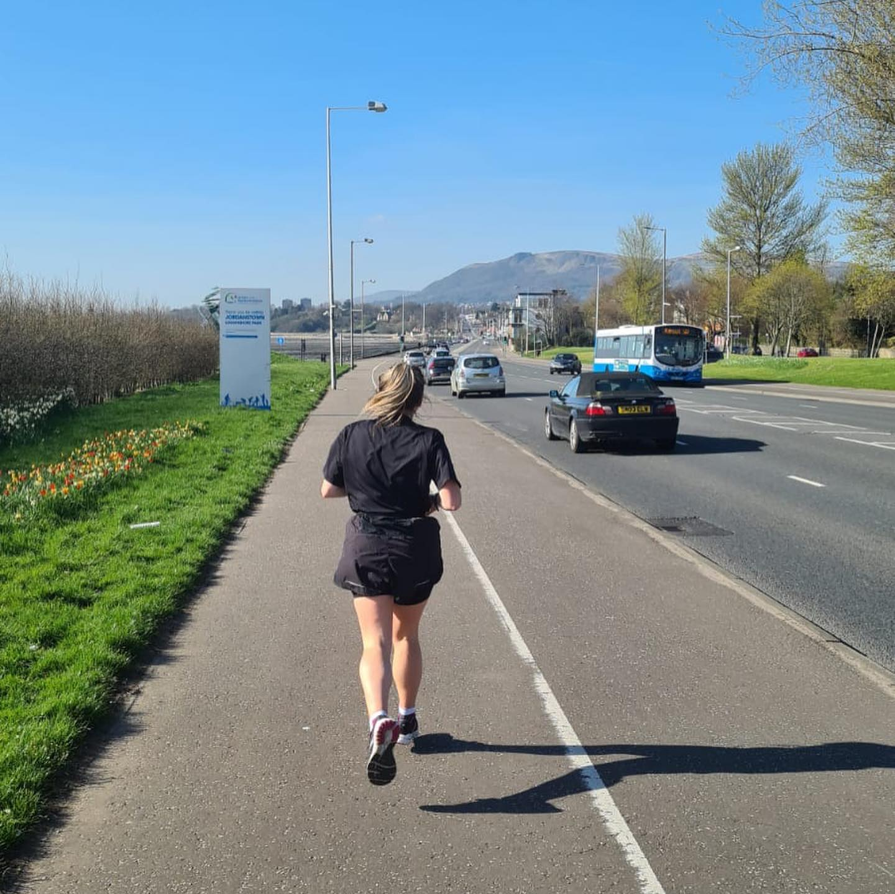
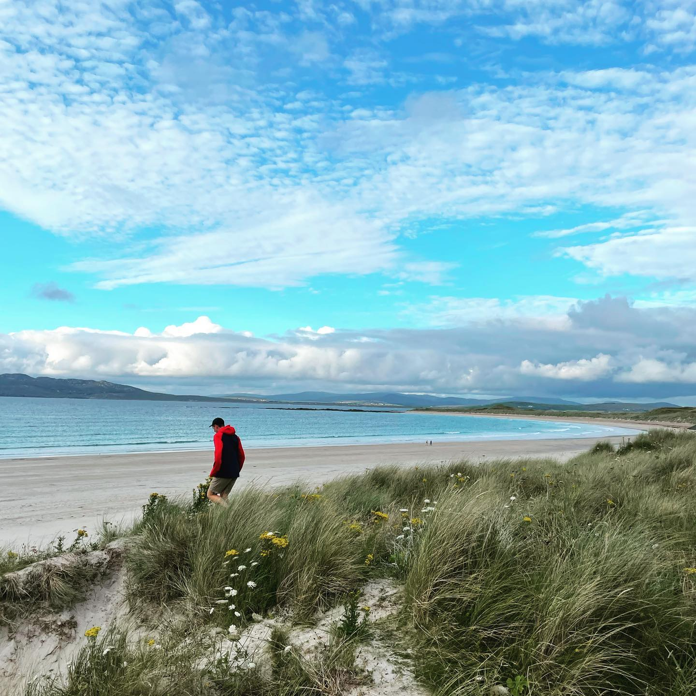
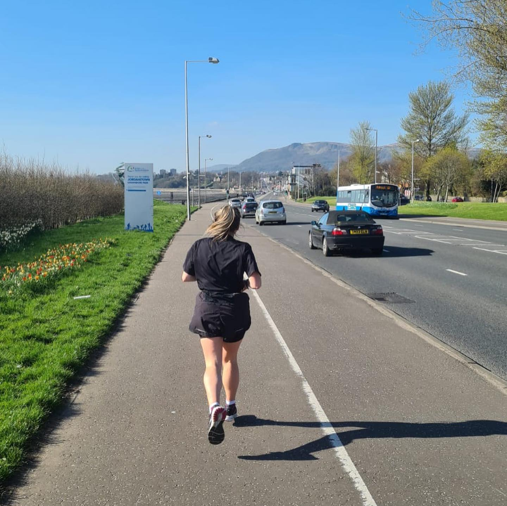

After being a teacher for 4 years, I decided to take the plunge into the scary tech world, although I don't know if anything is much scarier than 30 hungry, tired 9 year olds! I love learning new things and have enjoyed experiencing something entirely different and out of my comfort zone.
In my spare time I like to play sport, tag rugby(which doesn't involve tackling because I'm 5 foot nothing) and running- last week I completed my 50th parkrun!
Travelling is also another passion of mine and I hope to do a lot more in 2022 and bring my laptop with me!
In my biased opinion, also have the cutest rabbit in the world called Blu, who spends her time eating brocolli and causing havoc in my flat.
 


